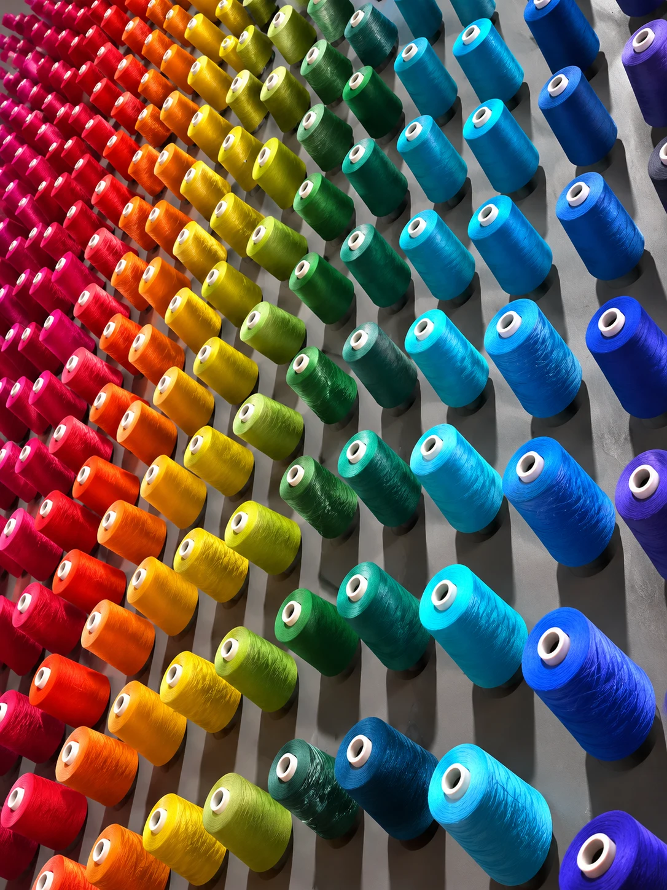

Passion
热情
We solve what others just supply.
我们解决问题，而非仅仅供货。
Careers 招聘
The world’s biggest sports brands are made here — by the people who cut, knit, print, sew, test and ship them. That’s not factory work. That’s engineering, at the scale of millions.
世界最大的运动品牌在这里诞生——由那些裁剪、针织、印刷、缝制、测试和交付它们的人完成。 这不是流水线工作，这是以百万计规模进行的工程实践。
Engineering isn’t just the lab. A pattern that fits, a stitch that holds, a mark that survives fifty washes — every one is an exact decision. Whatever your role, you’re doing engineering.
工程不只在实验室。 一个合身的版型、一针扎实的缝线、一个经过五十次洗涤仍清晰的标记——每一个都是精准的决定。 无论你担任什么角色，你都在做工程。
Our Values 我们的价值观
Four principles that guide every decision — from how we source fabric to how we build teams. 四项原则指导每一个决策—— 从我们如何采购面料，到我们如何组建团队。
We solve what others just supply.
我们解决问题，而非仅仅供货。
We leave nothing to chance.
我们不将任何事情交给偶然。
We hold the standard, order after order.
我们坚守标准，每一个订单皆如此。
We build without costing tomorrow.
我们在不透支未来的前提下持续发展。
Disciplines 职能领域
Turning a brief into a technical package a factory can build.
将设计概念转化为可供工厂生产的技术规格。
Finding the fabrics and finishes that meet the brief exactly.
寻找符合设计要求的面料与工艺处理方案。
The precision decisions that make a garment fit the way it should.
决定服装合身度的精准工程决策。
Embroidery, print and embellishment — the trusted craft at the heart of PCCS.
刺绣、印刷与装饰——PCCS 核心工艺的精华所在。
Holding every product to a standard the world’s top brands have trusted for fifty years.
确保每件产品达到全球顶级品牌五十年来信任的标准。
Manufacturing at scale — from cut to ship, quality built in at every stage.
大规模生产运营——从裁剪到出货，每个环节均内建质量管控。
Finance, HR, legal, sustainability — the functions that keep a group of this scale running.
财务、人力资源、法律、可持续发展——支撑集团高效运营的职能部门。
The Work 我们的工作

Development 开发 The Mark
品牌标记
The Mark
品牌标记
 Production
生产
Production
生产

Join the hands behind
the world’s biggest brands.
The next fifty years start with you.
加入那双在世界最大品牌背后的手。
未来的五十年，从你开始。